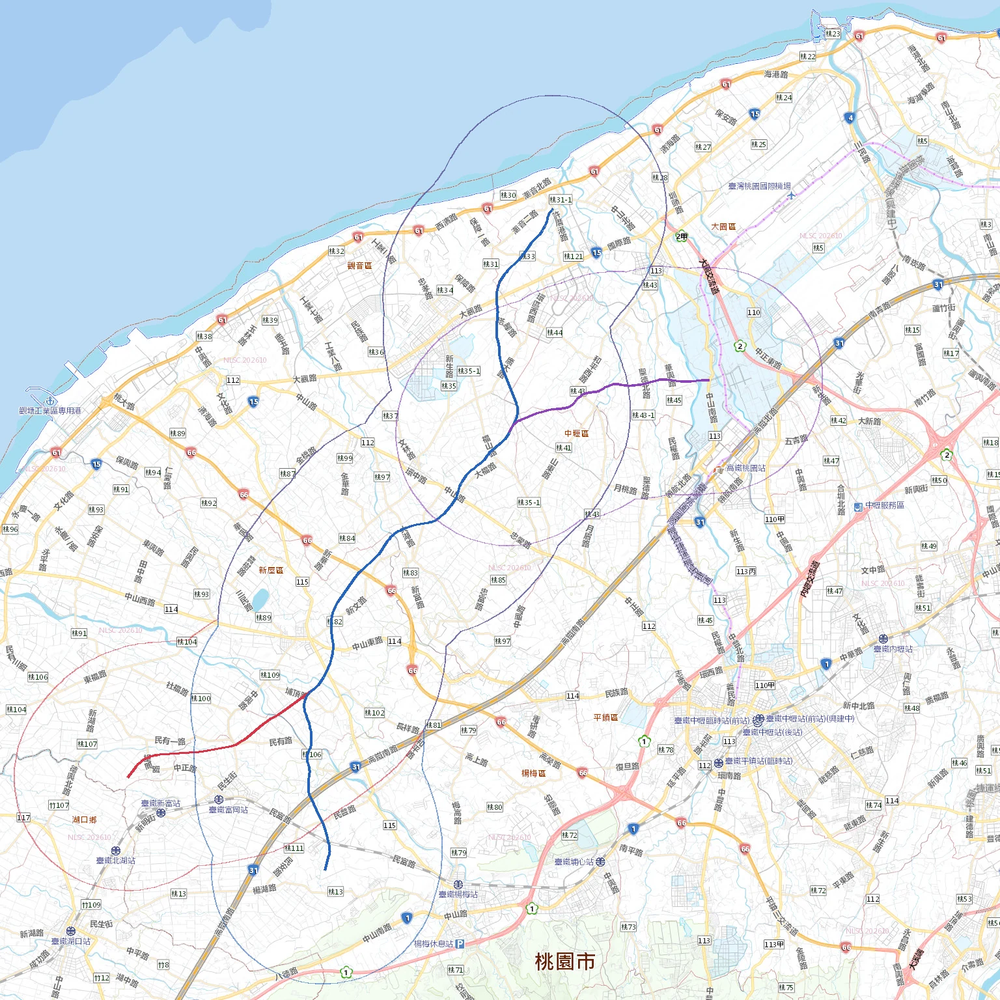
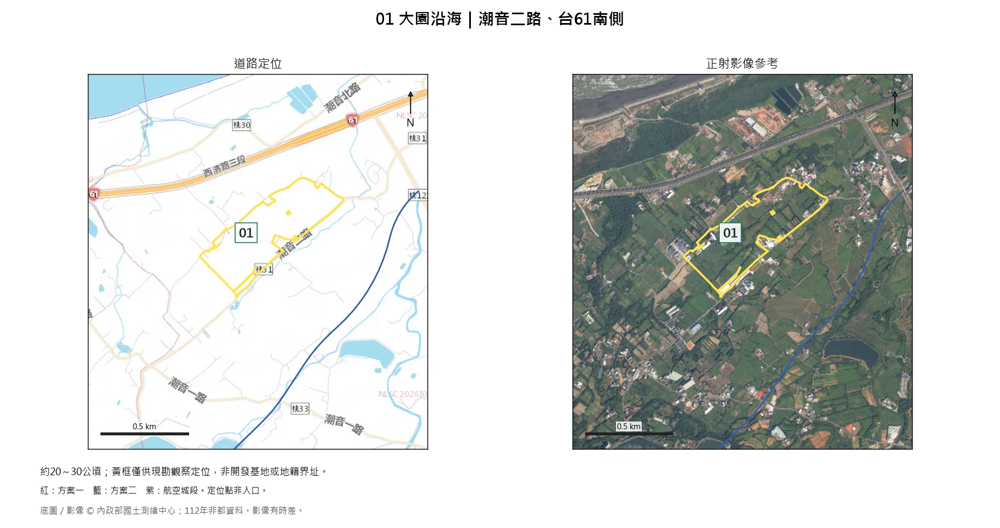
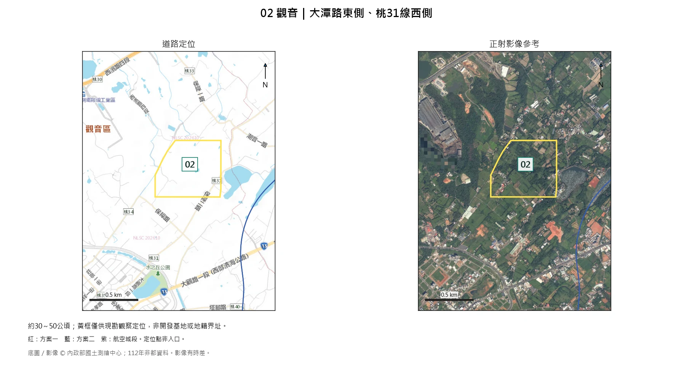
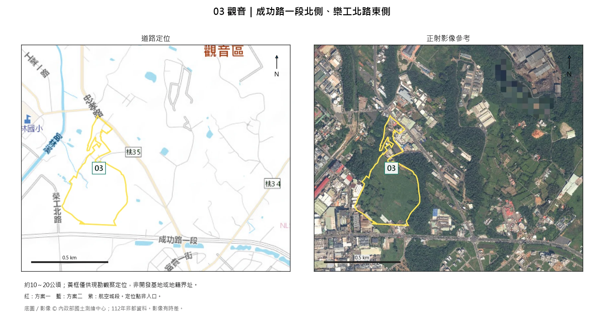
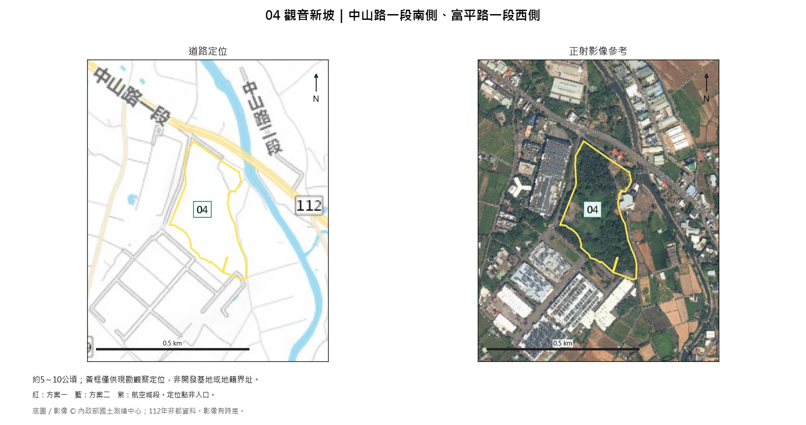
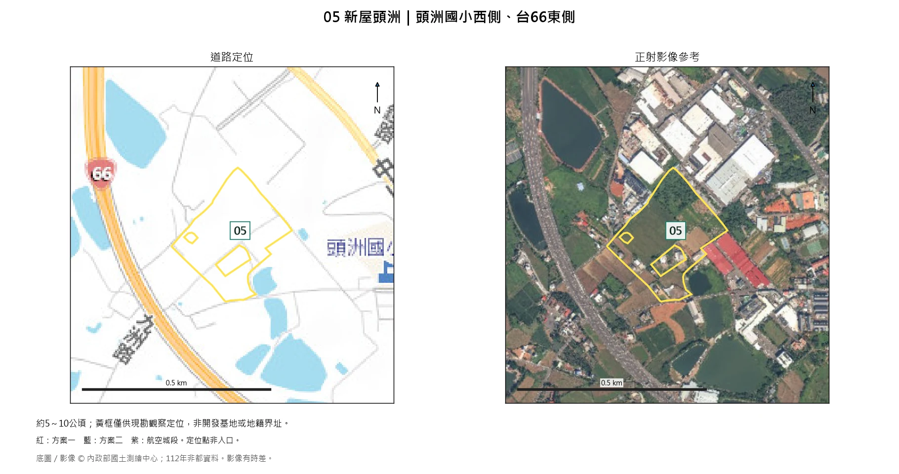
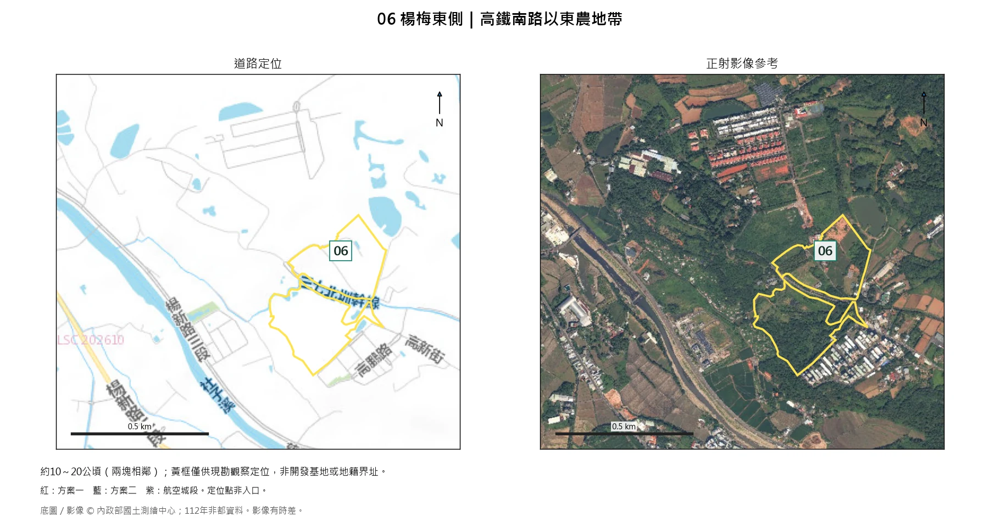

六點區位
01—06
方案一方案二航空城段淡線：兩側各3公里
現勘重點與筆記
依現勘順序排列| 編號 | 位置／概略規模 | 現勘重點 | 筆記 |
|---|---|---|---|
大園沿海 潮音二路、台61南側 約20～30公頃 | 土地現用、低窪積水、道路與聚落。 | ||
觀音 大潭路東側、桃31線西側 約30～50公頃 | 地形高差、土地連續性及道路銜接。 | ||
觀音 成功路一段北側、樂工北路東側 約10～20公頃 | 實際使用、道路出入及排水。 | ||
觀音新坡 中山路一段南側、富平路一段西側 約5～10公頃 | 土地現用、地方道路、鄰廠界面及排水。 | ||
新屋頭洲 頭洲國小西側、台66東側 約5～10公頃 | 地方道路、學校住宅界面及現用。 | ||
楊梅東側 高鐵南路以東農地帶 約10～20公頃（兩塊相鄰） | 高差、樹林現用、道路可達性及住宅。 |
筆記自動保存在此瀏覽器；交付或留存請使用「匯出筆記」或列印。
01 大園沿海｜潮音二路、台61南側

區位條件：較成片農地，具一定觀察規模。
主要疑慮：鄰近海岸、溪流及水體。
現勘重點：土地現用、低窪積水、道路與聚落。
筆記
02 觀音｜大潭路東側、桃31線西側

區位條件：較大農地帶，可觀察土地整合空間。
主要疑慮：樹林、散布建物及細路交錯。
現勘重點：地形高差、土地連續性及道路銜接。
筆記
03 觀音｜成功路一段北側、樂工北路東側

區位條件：影像較開闊，鄰近既有產業使用。
主要疑慮：草地現用及既有園區案件關係待確認。
現勘重點：實際使用、道路出入及排水。
筆記
04 觀音新坡｜中山路一段南側、富平路一段西側

區位條件：鄰接廠房，可觀察產業延伸空間。
主要疑慮：範圍有樹木，周邊建物限制整合。
現勘重點：土地現用、地方道路、鄰廠界面及排水。
筆記
05 新屋頭洲｜頭洲國小西側、台66東側

區位條件：鄰近既有產業使用，可查看整合空間。
主要疑慮：學校、住宅及廠房環繞，規模較小。
現勘重點：地方道路、學校住宅界面及現用。
筆記
06 楊梅東側｜高鐵南路以東農地帶

區位條件：綠地與部分開闊土地，可查看整合條件。
主要疑慮：樹木較多，地形不明，鄰近住宅。
現勘重點：高差、樹林現用、道路可達性及住宅。
筆記